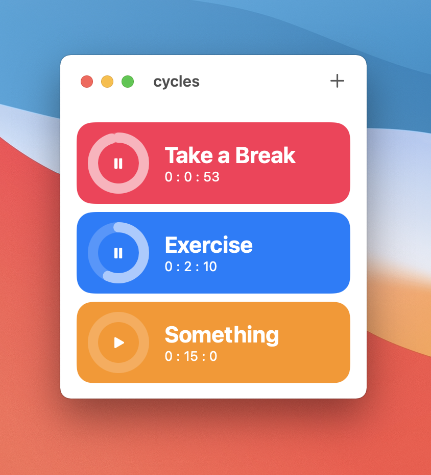

<!DOCTYPE html>
<html>
<head>
    <meta charset="utf-8">
    <meta name="viewport" content="width=device-width, initial-scale=1">
    <title>Cycles | Tony Zhang</title>
    <link rel = "stylesheet" href = "/style.css">
    <link rel="stylesheet" href="style.css">
    <link rel = "icon" href="/Icon.png">
</head>
<body>
<div id = "navbar">
    <a href="https://twitter.com/Tony24752364" target="about:blank">
        <div>
            
        </div>
    </a>
    <a href="/">
        <div style = "width: 100px;float: left">
            <h1 style = "text-align: center;margin:5px;" class="primary">Home</h1>
        </div>
    </a>
</div>

<div id = "mainContainer">
    <div style = "padding-left: 20px;padding-right: 20px; padding-top: 80px">
        <h1  class="primary">Cycles</h1>
        <div class = "headerUnderline"></div>
        <p>A simple timer made in swiftui.</p>
    </div>
    <div id = "flexContainer">
        <div class="flexItems">
            
        </div>
    </div>
    <div style = "padding-left: 20px;padding-right: 20px">
        <p>        
            You can change the title, color, and notification options. there is also an option to 
            make the timer restart after it reaches zero. <br>
        </p>
    </div>
    <div class="flexContainer">
        <div class="flexItems">
            
        </div>
    </div>
    <div style = "padding-left: 20px;padding-right: 20px">
        <p>
            You can see it's code and download it on <a href="https://github.com/Tony1324/cycles" target = "about:blank">Github</a>.
        </p>
    </div>
</div>
</body>
</html>
